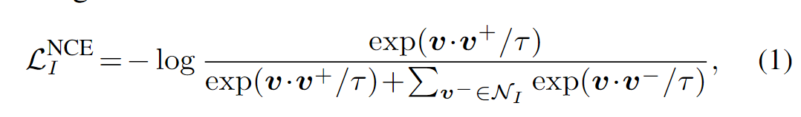

本文主要记录了对ContrastiveSeg(论文 ,代码 )的作者公开的代码的阅读和分析；
这篇论文提出的方法，从实现上来看，就是对于训练时模型添加了一个与分类头平行的投影头，添加了一个语义空间中的像素对比损失；按照对比对象来看，对比损失又分为两种实现，一种是mini-batch内的自对比，一种是mini-batch到memory
bank的对比；在为对比损失挑选正负样本时，还先后设计了segmentation-awared
hard anchor sampling用于从mini-batch中采样作为损失函数中的anchor
feature，以及semi-hard example sampling用于从memory
bank中采样作为损失函数的contrast feature（example
sampling部分作者暂未开源实现）。
无MemoryBank的像素对比损失实现
PixelContrastLoss:
该损失函数对应于作者在文中提到的不使用Memory
Bank的baseline，也就是只计算一个mini batch内的像素对比损失；
在loss_contrast.py 中：
通过ContrastCELoss的前向传播过程主要是将预测分割图上采样到gt
label大小之后，分别计算CE Loss和Pixel Contrast Loss；seg
是正常分割网络都会输出的 (B, C, H, W) (C是类别数)
的预测图，embed则是本文添加的与计算seg的 \(f_\mathrm{SEG}\) 并行的一个分支 \(f_\mathrm{PROJ}\)
的输出，旨在将特征图降维
1 2 3 4 5 6 7 8 9 10 11 12 13 14 15 16 17 18 19 20 21 22 23 24 25 26 27 28 29 30 31 32 33 34 35 36 37 38 39 40 class ContrastCELoss (nn.Module, ABC): def __init__ (self, configer=None ): super (ContrastCELoss, self).__init__() self.configer = configer ignore_index = -1 if self.configer.exists('loss' , 'params' ) and 'ce_ignore_index' in self.configer.get('loss' , 'params' ): ignore_index = self.configer.get('loss' , 'params' )['ce_ignore_index' ] Log.info('ignore_index: {}' .format (ignore_index)) self.loss_weight = self.configer.get('contrast' , 'loss_weight' ) self.use_rmi = self.configer.get('contrast' , 'use_rmi' ) if self.use_rmi: self.seg_criterion = FSAuxRMILoss(configer=configer) else : self.seg_criterion = FSCELoss(configer=configer) self.contrast_criterion = PixelContrastLoss(configer=configer) def forward (self, preds, target, with_embed=False ): h, w = target.size(1 ), target.size(2 ) assert "seg" in preds assert "embed" in preds seg = preds['seg' ] embedding = preds['embed' ] pred = F.interpolate(input =seg, size=(h, w), mode='bilinear' , align_corners=True ) loss = self.seg_criterion(pred, target) _, predict = torch.max (seg, 1 ) loss_contrast = self.contrast_criterion(embedding, target, predict) if with_embed is True : return loss + self.loss_weight * loss_contrast return loss + 0 * loss_contrast
首先来看PixelContrastLoss的初始化和前向部分 >
max_examples对应文中的 \(K\) (每个mini
batch采样的像素数量)；而文中所说的每个类别采样50个anchor，一半是hard，一半是random的策略，在这里的实现却稍有出入，与之相关的超参数是
max_views，一般为100，一个明显的原因是，无法保证在一个mini
batch中各个类别都有足够多的样本；
1 2 3 4 5 6 7 8 9 10 11 12 13 14 15 16 17 18 19 20 21 22 23 24 25 26 27 28 29 30 31 32 33 34 35 36 37 class PixelContrastLoss (nn.Module, ABC): def __init__ (self, configer ): super (PixelContrastLoss, self).__init__() self.configer = configer self.temperature = self.configer.get('contrast' , 'temperature' ) self.base_temperature = self.configer.get('contrast' , 'base_temperature' ) self.ignore_label = -1 if self.configer.exists('loss' , 'params' ) and 'ce_ignore_index' in self.configer.get('loss' , 'params' ): self.ignore_label = self.configer.get('loss' , 'params' )['ce_ignore_index' ] self.max_samples = self.configer.get('contrast' , 'max_samples' ) self.max_views = self.configer.get('contrast' , 'max_views' ) def forward (self, feats, labels=None , predict=None ): labels = labels.unsqueeze(1 ).float ().clone() labels = torch.nn.functional.interpolate(labels, (feats.shape[2 ], feats.shape[3 ]), mode='nearest' ) labels = labels.squeeze(1 ).long() assert labels.shape[-1 ] == feats.shape[-1 ], '{} {}' .format (labels.shape, feats.shape) batch_size = feats.shape[0 ] labels = labels.contiguous().view(batch_size, -1 ) predict = predict.contiguous().view(batch_size, -1 ) feats = feats.permute(0 , 2 , 3 , 1 ) feats = feats.contiguous().view(feats.shape[0 ], -1 , feats.shape[-1 ]) feats_, labels_ = self._hard_anchor_sampling(feats, labels, predict) loss = self._contrastive(feats_, labels_) return loss
接下来看_hard_anchor_sampling的细节：
1 2 3 4 5 6 7 8 9 10 11 12 13 14 15 16 17 18 19 20 21 22 23 24 25 26 27 28 29 30 31 32 33 34 35 36 37 38 39 40 41 42 43 44 45 46 47 48 49 50 51 52 53 54 55 56 57 58 59 60 61 62 63 64 65 66 67 68 69 def _hard_anchor_sampling (self, X, y_hat, y ): batch_size, feat_dim = X.shape[0 ], X.shape[-1 ] classes = [] total_classes = 0 for ii in range (batch_size): this_y = y_hat[ii] this_classes = torch.unique(this_y) this_classes = [x for x in this_classes if x != self.ignore_label] this_classes = [x for x in this_classes if (this_y == x).nonzero().shape[0 ] > self.max_views] classes.append(this_classes) total_classes += len (this_classes) if total_classes == 0 : return None , None n_view = self.max_samples // total_classes n_view = min (n_view, self.max_views) X_ = torch.zeros((total_classes, n_view, feat_dim), dtype=torch.float ).cuda() y_ = torch.zeros(total_classes, dtype=torch.float ).cuda() X_ptr = 0 for ii in range (batch_size): this_y_hat = y_hat[ii] this_y = y[ii] this_classes = classes[ii] for cls_id in this_classes: hard_indices = ((this_y_hat == cls_id) & (this_y != cls_id)).nonzero() easy_indices = ((this_y_hat == cls_id) & (this_y == cls_id)).nonzero() num_hard = hard_indices.shape[0 ] num_easy = easy_indices.shape[0 ] if num_hard >= n_view / 2 and num_easy >= n_view / 2 : num_hard_keep = n_view // 2 num_easy_keep = n_view - num_hard_keep elif num_hard >= n_view / 2 : num_easy_keep = num_easy num_hard_keep = n_view - num_easy_keep elif num_easy >= n_view / 2 : num_hard_keep = num_hard num_easy_keep = n_view - num_hard_keep else : Log.info('this shoud be never touched! {} {} {}' .format (num_hard, num_easy, n_view)) raise Exception perm = torch.randperm(num_hard) hard_indices = hard_indices[perm[:num_hard_keep]] perm = torch.randperm(num_easy) easy_indices = easy_indices[perm[:num_easy_keep]] indices = torch.cat((hard_indices, easy_indices), dim=0 ) X_[X_ptr, :, :] = X[ii, indices, :].squeeze(1 ) y_[X_ptr] = cls_id X_ptr += 1 return X_, y_
接下来看_contrastive的实现细节：
1 2 3 4 5 6 7 8 9 10 11 12 13 14 15 16 17 18 19 20 21 22 23 24 25 26 27 28 29 30 31 32 33 34 35 36 37 38 39 40 41 42 43 def _contrastive (self, feats_, labels_ ): anchor_num, n_view = feats_.shape[0 ], feats_.shape[1 ] labels_ = labels_.contiguous().view(-1 , 1 ) mask = torch.eq(labels_, torch.transpose(labels_, 0 , 1 )).float ().cuda() contrast_count = n_view contrast_feature = torch.cat(torch.unbind(feats_, dim=1 ), dim=0 ) anchor_feature = contrast_feature anchor_count = contrast_count anchor_dot_contrast = torch.div(torch.matmul(anchor_feature, torch.transpose(contrast_feature, 0 , 1 )), self.temperature) logits_max, _ = torch.max (anchor_dot_contrast, dim=1 , keepdim=True ) logits = anchor_dot_contrast - logits_max.detach() mask = mask.repeat(anchor_count, contrast_count) neg_mask = 1 - mask logits_mask = torch.ones_like(mask).scatter_(1 , torch.arange(anchor_num * anchor_count).view(-1 , 1 ).cuda(), 0 ) mask = mask * logits_mask neg_logits = torch.exp(logits) * neg_mask neg_logits = neg_logits.sum (1 , keepdim=True ) exp_logits = torch.exp(logits) log_prob = logits - torch.log(exp_logits + neg_logits) mean_log_prob_pos = (mask * log_prob).sum (1 ) / mask.sum (1 ) loss = - (self.temperature / self.base_temperature) * mean_log_prob_pos loss = loss.mean() return loss

InfoNCE
这里的实现细节如下：
记anchor_feature为 \(Q\in\mathbb{R}^{VC_t\times D}\) ，contrast
feature为 \(K \in \mathbb{R}^{VC_t\times
D}\) ，logits为 \[
L = QK^T/\tau - C
\] 其中 \(C_i\) 对于每个 \(Q_i\)
来说应当是一个常数，因为有等价变换：
\[
\frac{\exp({L_i-c})}{L_i + \exp(\sum_j L_j - c)} = \frac{\exp
L_i}{\exp\sum_j L_j}
\] \(C_i\) 对于 \(K_i\)
却没有必要一致，这也就解释了为什么这一行代码中dim=1；
1 logits_max, _ = torch.max (anchor_dot_contrast, dim=1 , keepdim=True )
下面两行代码计算所有anchor与它们的负例计算的logits的和
1 2 neg_logits = torch.exp(logits) * neg_mask neg_logits = neg_logits.sum (1 , keepdim=True )
对于下面这段代码，乍一看好像不太对劲： 1 2 3 exp_logits = torch.exp(logits) log_prob = logits - torch.log(exp_logits + neg_logits) mean_log_prob_pos = (mask * log_prob).sum (1 ) / mask.sum (1 )
似乎，这一段应该写成： 1 2 3 4 5 6 mean_log_prob_pos = 0.0 logits = logits * mask exp_logits = torch.exp(logits) for j in range (mask.shape[1 ]): mean_log_prob_pos += logits[:, j] - torch.log(exp_logits[:, j] + neg_logits) mean_log_prob_pos /= mask.sum (1 )
但是因为exp, log, add,
sub与乘mask一样都是逐点运算，因此可以写成源代码的样子；
唯一的小出入发生在这个与base_temperature加权上，原来的公式没有提到这一点；
1 loss = - (self.temperature / self.base_temperature) * mean_log_prob_pos
有Memory
Bank的像素到像素、像素到区域的对比损失实现
首先在模型初始化时（hrnet.py ），注册了相关的buffer，memory_size这个超参在文中没有提到，但是估计是出于实际应用考虑，仍然要给队列大小设置一个限，一般是5000，简记为
\(R\) （固定大小的queue也比可变大小的queue实现简单）；segment_queue
保存 \(C\)
个类别上的采样的anchor均值池化信息，pixel_queue 保存 \(C\)
个类别上采样的anchor的信息；因为各个类别的queue是单独维护的，因此需要有记录每个类别的queue队尾的指针；（非常的C风格）
训练时，前向阶段返回key是该批次所有输入图片在嵌入空间的特征（不含梯度），lb_key就是gt
label；
1 2 3 4 5 6 7 8 9 10 11 12 13 14 15 16 17 18 19 20 21 22 23 24 25 26 27 28 29 30 31 32 class HRNet_W48_MEM (nn.Module): def __init__ (self, configer, dim=256 , m=0.999 , with_masked_ppm=False ): super (HRNet_W48_MEM, self).__init__() self.configer = configer self.m = m self.r = self.configer.get('contrast' , 'memory_size' ) self.with_masked_ppm = with_masked_ppm num_classes = self.configer.get('data' , 'num_classes' ) self.encoder_q = HRNet_W48_CONTRAST(configer) self.register_buffer("segment_queue" , torch.randn(num_classes, self.r, dim)) self.segment_queue = nn.functional.normalize(self.segment_queue, p=2 , dim=2 ) self.register_buffer("segment_queue_ptr" , torch.zeros(num_classes, dtype=torch.long)) self.register_buffer("pixel_queue" , torch.randn(num_classes, self.r, dim)) self.pixel_queue = nn.functional.normalize(self.pixel_queue, p=2 , dim=2 ) self.register_buffer("pixel_queue_ptr" , torch.zeros(num_classes, dtype=torch.long)) def forward (self, im_q, lb_q=None , with_embed=True , is_eval=False ): if is_eval is True or lb_q is None : ret = self.encoder_q(im_q, with_embed=with_embed) return ret ret = self.encoder_q(im_q) q = ret['embed' ] out = ret['seg' ] return {'seg' : out, 'embed' : q, 'key' : q.detach(), 'lb_key' : lb_q.detach()}
接着在trainer_contrastive.py 中，每个批次的前向传播完成后，会将这个批次得到的anchor进行采样后加入memory
bank：
1 2 3 4 5 6 7 8 9 10 11 12 13 14 15 16 17 18 19 20 21 22 23 24 25 26 27 28 29 30 31 32 for i, data_dict in enumerate (self.train_loader): if self.with_contrast is True : if self.with_memory is True : outputs = self.seg_net(*inputs, targets, with_embed=with_embed) outputs['pixel_queue' ] = self.seg_net.module.pixel_queue outputs['pixel_queue_ptr' ] = self.seg_net.module.pixel_queue_ptr outputs['segment_queue' ] = self.seg_net.module.segment_queue outputs['segment_queue_ptr' ] = self.seg_net.module.segment_queue_ptr else : outputs = self.seg_net(*inputs, with_embed=with_embed) else : outputs = self.seg_net(*inputs) if self.with_memory and 'key' in outputs and 'lb_key' in outputs: self._dequeue_and_enqueue(outputs['key' ], outputs['lb_key' ], segment_queue=self.seg_net.module.segment_queue, segment_queue_ptr=self.seg_net.module.segment_queue_ptr, pixel_queue=self.seg_net.module.pixel_queue, pixel_queue_ptr=self.seg_net.module.pixel_queue_ptr) self.optimizer.zero_grad() backward_loss.backward()
_dequeue_and_enqueue的实现比较好理解，只不过这里是将label下采样到嵌入特征图尺寸，而不是上采样特征图；以及这里实现的pixel采样方法就只是随机采样，没有用到pred
seg，对每个类别随机挑选了K个pixel
embedding入队；pixel_update_freq 是文中的 \(V=10\) ；
1 2 3 4 5 6 7 8 9 10 11 12 13 14 15 16 17 18 19 20 21 22 23 24 25 26 27 28 29 30 31 32 33 34 35 36 37 def _dequeue_and_enqueue (self, keys, labels, segment_queue, segment_queue_ptr, pixel_queue, pixel_queue_ptr ): batch_size = keys.shape[0 ] feat_dim = keys.shape[1 ] labels = labels[:, ::self.network_stride, ::self.network_stride] for bs in range (batch_size): this_feat = keys[bs].contiguous().view(feat_dim, -1 ) this_label = labels[bs].contiguous().view(-1 ) this_label_ids = torch.unique(this_label) this_label_ids = [x for x in this_label_ids if x > 0 ] for lb in this_label_ids: idxs = (this_label == lb).nonzero() feat = torch.mean(this_feat[:, idxs], dim=1 ).squeeze(1 ) ptr = int (segment_queue_ptr[lb]) segment_queue[lb, ptr, :] = nn.functional.normalize(feat.view(-1 ), p=2 , dim=0 ) segment_queue_ptr[lb] = (segment_queue_ptr[lb] + 1 ) % self.memory_size num_pixel = idxs.shape[0 ] perm = torch.randperm(num_pixel) K = min (num_pixel, self.pixel_update_freq) feat = this_feat[:, perm[:K]] feat = torch.transpose(feat, 0 , 1 ) ptr = int (pixel_queue_ptr[lb]) if ptr + K >= self.memory_size: pixel_queue[lb, -K:, :] = nn.functional.normalize(feat, p=2 , dim=1 ) pixel_queue_ptr[lb] = 0 else : pixel_queue[lb, ptr:ptr + K, :] = nn.functional.normalize(feat, p=2 , dim=1 ) pixel_queue_ptr[lb] = (pixel_queue_ptr[lb] + 1 ) % self.memory_size
定义在loss_contrast_mem.py
1 2 3 4 5 6 7 8 9 10 11 12 13 14 15 16 17 18 19 20 21 22 23 24 25 26 27 28 29 30 31 32 33 34 35 36 37 38 39 class ContrastCELoss (nn.Module, ABC): def __init__ (self, configer=None ): def forward (self, preds, target, with_embed=False ): h, w = target.size(1 ), target.size(2 ) assert "seg" in preds assert "embed" in preds seg = preds['seg' ] embedding = preds['embed' ] if "segment_queue" in preds: segment_queue = preds['segment_queue' ] else : segment_queue = None if "pixel_queue" in preds: pixel_queue = preds['pixel_queue' ] else : pixel_queue = None pred = F.interpolate(input =seg, size=(h, w), mode='bilinear' , align_corners=True ) loss = self.seg_criterion(pred, target) if segment_queue is not None and pixel_queue is not None : queue = torch.cat((segment_queue, pixel_queue), dim=1 ) _, predict = torch.max (seg, 1 ) loss_contrast = self.contrast_criterion(embedding, target, predict, queue) else : loss_contrast = 0 if with_embed is True : return loss + self.loss_weight * loss_contrast return loss + 0 * loss_contrast
之后的主要区别应该体现在 contrast_criterion
的前向过程了：
1 2 3 4 5 6 7 8 9 10 11 12 13 14 15 16 17 18 19 def forward (self, feats, labels=None , predict=None , queue=None ): labels = labels.unsqueeze(1 ).float ().clone() labels = torch.nn.functional.interpolate(labels, (feats.shape[2 ], feats.shape[3 ]), mode='nearest' ) labels = labels.squeeze(1 ).long() assert labels.shape[-1 ] == feats.shape[-1 ], '{} {}' .format (labels.shape, feats.shape) batch_size = feats.shape[0 ] labels = labels.contiguous().view(batch_size, -1 ) predict = predict.contiguous().view(batch_size, -1 ) feats = feats.permute(0 , 2 , 3 , 1 ) feats = feats.contiguous().view(feats.shape[0 ], -1 , feats.shape[-1 ]) feats_, labels_ = self._hard_anchor_sampling(feats, labels, predict) loss = self._contrastive(feats_, labels_, queue=queue) return loss
定睛一看，还不是，区别都在_contrastive里（确信是C风格而不是C++/python风格因为不使用继承而是import
A as B）；
这其中有个 _simple_negative，其功能是把
(C, 2R, D)
的queue变成(C*2R, D)的X_contrast和对应(C*2R, )的类别标签y_contrast（排除了背景类0）；这就意味着，这里是一个mini-batch中采样的V*C_t个anchor与所memory
bank中C*2R个记录两两计算相似度，进一步计算InfoNCE损失；计算损失的实现与先前相同；
1 2 3 4 5 6 7 8 9 10 11 12 13 14 15 16 17 18 19 20 21 22 23 24 25 26 27 28 29 30 31 32 33 34 35 36 37 38 39 40 41 def _contrastive (self, X_anchor, y_anchor, queue=None ): anchor_num, n_view = X_anchor.shape[0 ], X_anchor.shape[1 ] y_anchor = y_anchor.contiguous().view(-1 , 1 ) anchor_count = n_view anchor_feature = torch.cat(torch.unbind(X_anchor, dim=1 ), dim=0 ) if queue is not None : X_contrast, y_contrast = self._sample_negative(queue) y_contrast = y_contrast.contiguous().view(-1 , 1 ) contrast_count = 1 contrast_feature = X_contrast else : y_contrast = y_anchor contrast_count = n_view contrast_feature = torch.cat(torch.unbind(X_anchor, dim=1 ), dim=0 ) mask = torch.eq(y_anchor, y_contrast.T).float ().cuda() anchor_dot_contrast = torch.div(torch.matmul(anchor_feature, contrast_feature.T), self.temperature) logits_max, _ = torch.max (anchor_dot_contrast, dim=1 , keepdim=True ) logits = anchor_dot_contrast - logits_max.detach() mask = mask.repeat(anchor_count, contrast_count) neg_mask = 1 - mask logits_mask = torch.ones_like(mask).scatter_(1 , torch.arange(anchor_num * anchor_count).view(-1 , 1 ).cuda(), 0 ) mask = mask * logits_mask neg_logits = torch.exp(logits) * neg_mask neg_logits = neg_logits.sum (1 , keepdim=True ) exp_logits = torch.exp(logits) log_prob = logits - torch.log(exp_logits + neg_logits) mean_log_prob_pos = (mask * log_prob).sum (1 ) / mask.sum (1 ) loss = - (self.temperature / self.base_temperature) * mean_log_prob_pos loss = loss.mean() return loss
关于没有开放源码的example
sampling策略
正如很多人在issues 中指出的，作者确实没有在仓库中给出任何example
sampling的有关代码，只有一个把所有memory bank全部拿来用的
_simple_negative；通过上述分析，找到了这个example
sampling发生的位置，那么只要把这个_simple_negative换成文中说的semi-hard的策略就可以了。